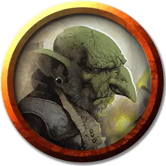

Член банды гоблинов
Goblin Gang Member
Маленький Гуманоид (Гоблиноид), нейтрально-злой

Класс Доспеха 14 (кожаный доспех)
Хиты 10 (3к6)
Скорость 30 футов
| мод | спас | ||
|---|---|---|---|
| СИЛ | 8 | −1 | −1 |
| ЛОВ | 16 | +3 | +3 |
| ТЕЛ | 10 | +0 | +0 |
| мод | спас | ||
|---|---|---|---|
| ИНТ | 10 | +0 | +0 |
| МДР | 10 | +0 | +0 |
| ХАР | 8 | −1 | −1 |
Навыки Скрытность +5
Чувства тёмное зрение 60 футов, пассивное Восприятие 10
Языки Общий, Гоблинский
Опасность 1/4 (50 опыта)
Бонус мастерства +2
Особенности
Ловкий побег. Гоблин может в каждом своём ходу бонусным действием совершать действие Засада или Отход.
Действия
Кинжал. . Рукопашная атака оружием: +5 к попаданию, досягаемость 5 фт., одна цель. Попадание: 5 (1к4 + 3) колющего урона.
Легкий арбалет. . Дальнобойная атака оружием: +5 к попаданию, дистанция 80/320 фт., одна цель. Попадание: 7 (1к8 + 3) колющего урона.
Описание
Все члены банды Кренко являются членами банды гоблинов. Каждый гоблин носит с собой свисток (носится на веревке на шее), в который он может действием дуть, чтобы подать сигнал тревоги. Гоблин может носить с собой еще один предмет, добытый в другом месте, и использовать его в бою, если представится возможность. Вы можете бросить или выбрать один из предметов из таблицы «Собственность банды гоблинов».
Собственность банды гоблинов
| к20 | Предмет |
| 1-10 | Нет дополнительных предметов |
| 11-12 | Фляга с кислотой |
| 13-14 | Фляга с алхимическим огнём |
| 15-16 | Металлические шарики |
| 17-18 | Калтропы |
| 19-20 | Фляга с простым ядом |